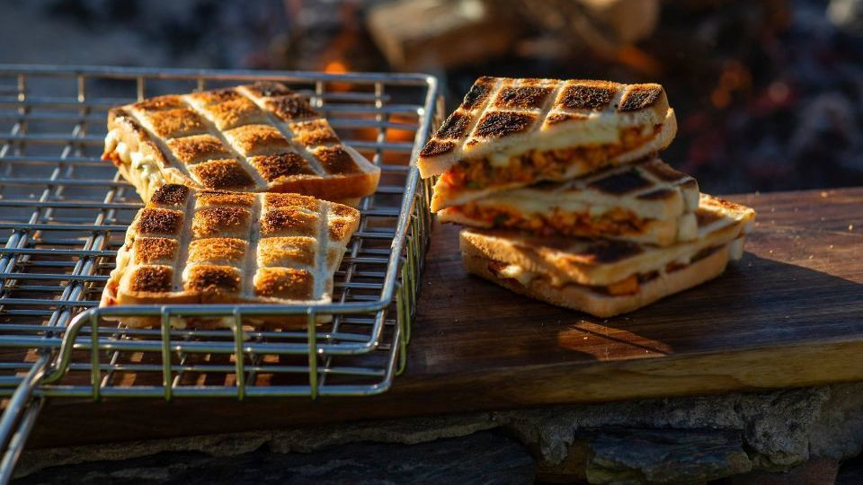

Braaibroodjies

The best way to explain how important braaibrrodjies are in
South African and braai culture is to mention that has inspired
songs and books have been written on it, it has its own memes.
The best thing about it however is that despite for a few basic
rules of thumb, you can put whatever you like on it. There are
enough fillings to fill a recipe book (mentioned above). The
only limit is you own imagination, fillings can be as diverse
as mango atchar to mushrooms to mashed banana & peanut butter.
Below will follow instructions for the original, which is by no
means the only way to make it. It's more guidelines than actual
rules.
Ingredients:
- Loaf of bread (sliced)
- olive oil/vegan butter/butter(vegetarian)
- tomatoes (sliced)
- onions (sliced)
- salt & pepper to taste
- vegan cheese/cheese(vegetarian)
- Mrs Ball's Chutney (Optional)
Method:
- Butter the bread on the outsides, or both. This is your
chance to have your bread buttered on both sides!
- Put the fillings in as if making a normal sandwich, don't
be shy with the salt & pepper.
- The chutney is an optional extra, there is no right or
wrong, it is a matter of personal taste.
- Pack the braaibroodjies with the buttered side to the
outside on a braai grid. (Nothing stops you from putting
butter on the inside and outside).
- Braai over very slow coals quite high above the coals. Most
foods will make a sound if it gets too hot, braaibroodjies
don't, just burn pitch black without warning.
Hence it is important to butter them on the outside
and turn them around often. There's a saying in Afrikaans:
"Braaibroodjies is draaibroodjies". Meaning you have
to turn them often, but it also rhymes, which is cool.
- The braaibrrodjies are ready when the outside is golden
brown and crispy, but not burnt. By now the cheese should
be melted and the onions soft, they are ready to be served!
Try some other recipes